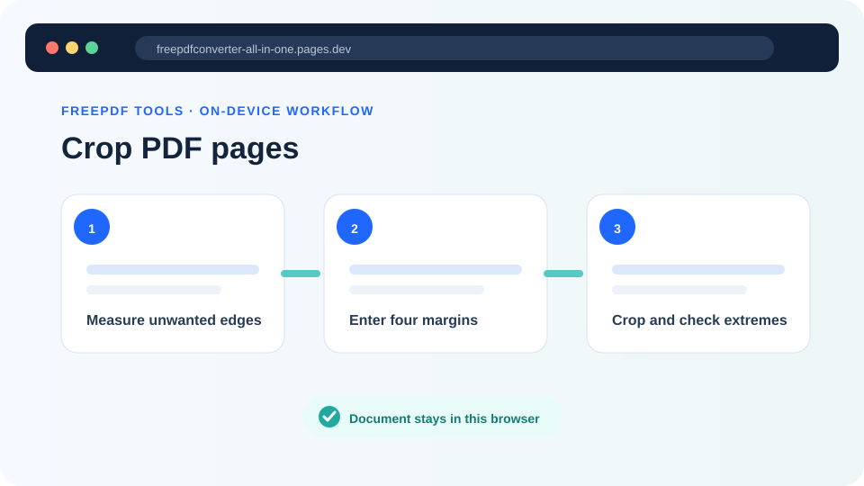
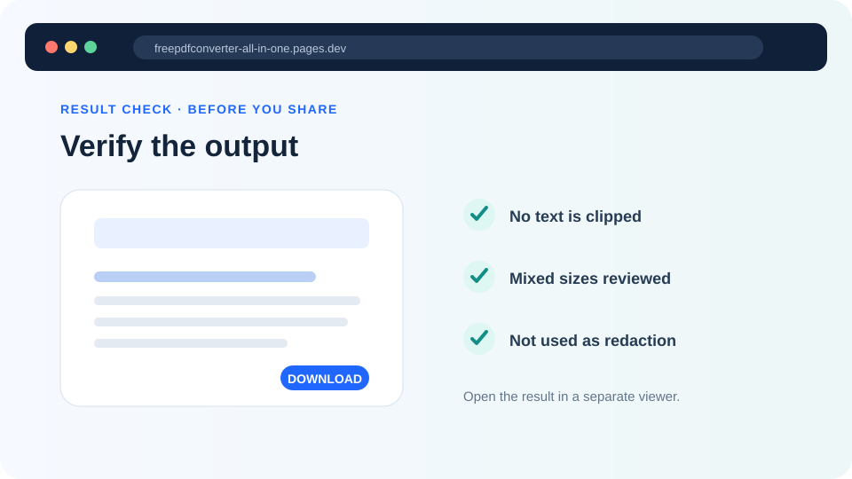

How to crop PDF pages without cutting important content
Hide scanner borders or excess whitespace with measured crop margins, then verify mixed sizes, rotated pages and print edges.
Updated August 11, 2026 · By FreePDF Tools · 7 minute read


Cropping changes the visible PDF rectangle
A PDF page can describe several boxes. The media box represents the physical page, while the crop box tells a viewer which part should normally be displayed or printed. The FreePDF crop tool reduces the current crop box. It does not take a screenshot, scale the content or erase objects outside the new rectangle.
This distinction matters. Cropping is appropriate for hiding a dark scanner edge, a wide blank margin, crop marks or an unwanted visual border. It is not secure redaction. A recipient may be able to expand the crop box or inspect objects that remain outside it. Sensitive information must be removed with a proper redaction process.
Choose margins from representative pages
Open the source and identify the smallest safe distance from content to each edge. Check pages with handwritten notes, page numbers, footnotes, full-width tables, signatures and landscape orientation. If the first page has wide whitespace but later pages use that area, a large universal crop will damage the later pages.
The tool accepts millimetres and applies one set of top, right, bottom and left values to every page. Start around 3 mm for a narrow scanner line rather than guessing 20 mm. One inch equals 25.4 mm. The browser converts your values to PDF points and leaves at least a small visible page area as a safety check.
Crop a PDF locally
- Create a working copy and open the Crop PDF tool.
- Choose one unlocked PDF and wait for its page count.
- Enter how much should be hidden from each edge. Zero leaves that edge unchanged.
- Select Crop every page. The tool adjusts each page relative to its existing visible box.
- Open the new file and inspect pages near the beginning, middle and end at a high zoom.
Trim page edges without an upload
Your browser changes the crop boxes and downloads a separate PDF.
Review screens and print use separately
On screen, look for clipped letters, missing page numbers, truncated annotations and uneven visual margins. A viewer may automatically fit the new visible page to the window, making content appear larger even though it was not scaled. Compare at the same zoom when judging quality.
For paper, remember that printers have non-printable regions. Cropping whitespace does not make a printer capable of edge-to-edge output. Print a representative page when the result will be bound, stamped or submitted on paper. Leave extra space on the binding edge and around punch holes.
Common problems
- One page is clipped: use smaller margins or separate that page into another batch.
- The PDF still contains hidden material: expected; crop is presentation, not deletion.
- A rotated page crops strangely: rotate it first, then crop the corrected copy.
- The result looks unchanged: the source may already have a restrictive crop box, or the margin value may be too small to notice.